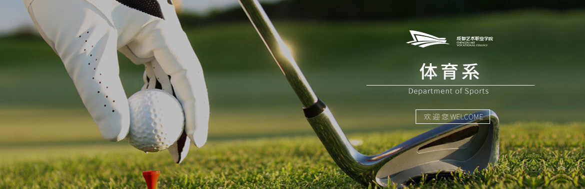

本专业培养具有休闲运动的基本理论知识、基本技术、基本技能；具有休闲运动的组织管理能力；具备各类休闲运动的鉴赏能力和一定的组织教学指导能力；懂得休闲运动产业的经营管理和市场营销；具备 “一专一长”，即一个专业一个特长，有良好的服务意识、职业素养和实际操作能力； “德、智、体、美”全面发展的高级应用型人才。
本专业毕业生主要面向：国内：各类休闲运动俱乐部、会所、运动中心；休闲运动管理机构（行政单位、社区、景区）；休闲运动产业企业；事业单位；高级酒店。国外：休闲运动服务与管理行业。